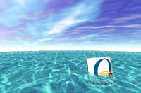
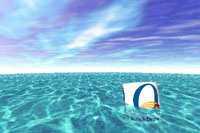

WindRacer est un jeu de course de funboard (planche à voile) entièrement en 3D, milliers de couleurs et plein écran, qui fonctionnera sur les PowerMacintosh G3, grâce à leur processeur 3D ATI Rage.
1/10/98: Le moteur 3D est achevé (les images que vous voyez ne sont pas des montages: c'est vraiment ce que l'on voit dans le jeu). Les performances actuelles sont aux alentours de 18 FPS sur mon PB G3 (puce ATI Light) et de 30 FPS sur un G3/300 (puce ATI PRO) en 600x400 32000 couleurs, lissage de textures, effets de transparence et de shading compris.
Le moteur 3D utilise la technologie Rave d'Apple. Il fonctionne donc sur tous les G3 ainsi que les possesseurs de cartes 3D compatible Rave (3DFX, cartes 3DLabs de Newer, certaines cartes de MacTell et Radius...).
 
 Il reste à dessiner les planches, les personnages, les décors ainsi que l'interface et enfin créer les musiques! Sinon, c'est pour bientôt.
10/10/98: Pour ceux qui doute encore de la qualité du moteur 3D, cette image comparative devraient finir de les convaincre: le Flat shading (l'objet est anguleux), c'est ce que vous obtenez généralement avec les moteurs 3D (même accélérés 3DFX - cf Carmagedon, Quake, Unreal...); avec mon moteur vous obtenez du Lambert shading / Phong shading (c'est à dire des objets lisses) en temps réel!!
Le concept du jeu va vraisemblablement changer et le nom avec (WaterRace): le joueur disposera en fait de plusieurs véhicules: hors-bord, scooter, planche à voile... et affrontera ses concurrents sur des circuits balisés.
18/10/98: La nouveauté de la semaine est un éditeur d'objets 3D temp réel développé maison qui permet donc de créer les objets du jeu.
L'éditeur peut importer les meshs contenus dans un fichier QuickDraw 3D 3DMF, les positionner, leur appliquer une couleur ou bien sûr une texture (mapping ultraprécis au pixel près pour chaque vertex) et définir de nombreux paramètres (shading, difuse, specular...).
Il est de plus possible de définir des liens "physiques" entre les différentes parties d'un objet afin de pouvoir faire de la cinématique (ex: sur un personnage, on relie la main à l'avant-bras et l'avant-bras au bras, et si l'on bouge le bras, alors l'avant-bras et la main suivent).
28/10/98: Nouvelle version de la demo du jeu: on commence à se faire une idée de la version définitive... bien qu'il reste encore beaucoup de travail!
Pour fêter ça, voici toute une série de screen shots (cliquez sur l'un d'eux pour le voir en plein écran):

4/11/98: Nouvelle version de l'éditeur d'objet (la 2.4). Nombreuses améliorations, mais surtout il inclue désormais un séquenceur, ce qui permet de programmer des animations sophistiquées des différentes parties de l'objet.
Caractéristiques: précision 1/100 de seconde, multi-tâches préemptif, interpolation linéaire...
14/11/98: L'éditeur d'objet est achevé. Il s'appelle désormais Fusion 1.0. Encore de nombreuses améliorations, mais surtout un manuel complet de plus de 20 pages décrit son fonctionnement.
De nombreux changements sont en cours. Des nouvelles très bientôt.